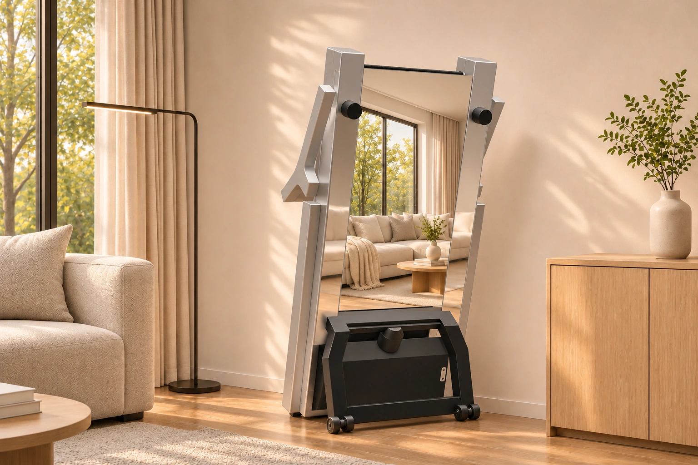

<!doctype html><html lang="zh-CN"><meta charset="utf-8"><meta name="viewport" content="width=device-width,initial-scale=1"><title>凌序 · 居家镜面效果 R3</title><style>*{box-sizing:border-box}body{margin:0;background:#f5f2ec;color:#34352f;font:16px/1.7 -apple-system,BlinkMacSystemFont,"PingFang SC",sans-serif}main{max-width:1600px;margin:auto;padding:30px 4vw}header{display:flex;justify-content:space-between;align-items:end;gap:20px;margin-bottom:24px}h1{font-size:clamp(24px,3vw,40px);font-weight:500;margin:4px 0}small,p{color:#727466}figure{margin:0}img{display:block;width:100%;height:auto}a{color:inherit;text-underline-offset:5px}.links{display:flex;flex-wrap:wrap;gap:24px;margin:20px 0}.status{font-size:13px;background:#e4e8db;padding:6px 12px;white-space:nowrap}figcaption{margin-top:16px;font-size:14px}</style><main><header><div><small>LINEAR / HOME MIRROR · R3</small><h1>凌序 · 竖放居家镜面效果</h1></div><span class="status">新生成 · 待用户评审</span></header><figure><a href="linear-home-mirror-r3.webp" target="_blank"></a><figcaption>依据新STEP的当前竖放截图生成，呈现镜面机底与居家材质。AI场景效果图，细节以原模型及用户评审为准。</figcaption></figure><nav class="links"><a href="linear-home-mirror-r3.webp" target="_blank">查看大图 ↗</a><a href="../linear-fold-r2-20261115/viewer.html?rev=compact-fold-20261115b">查看原模型与折叠动画 ↗</a><a href="../#linear">返回主评审 ↗</a></nav></main></html>
